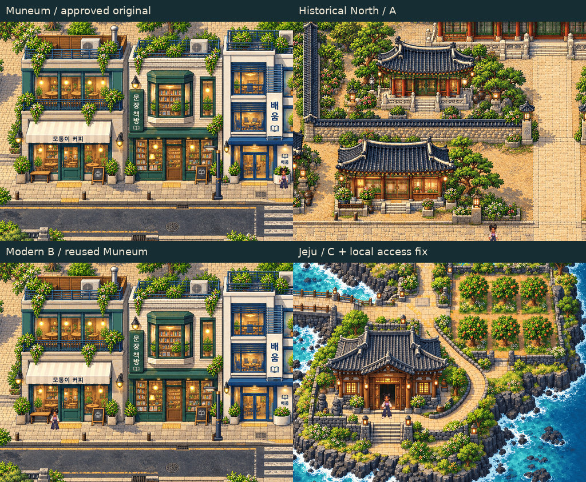
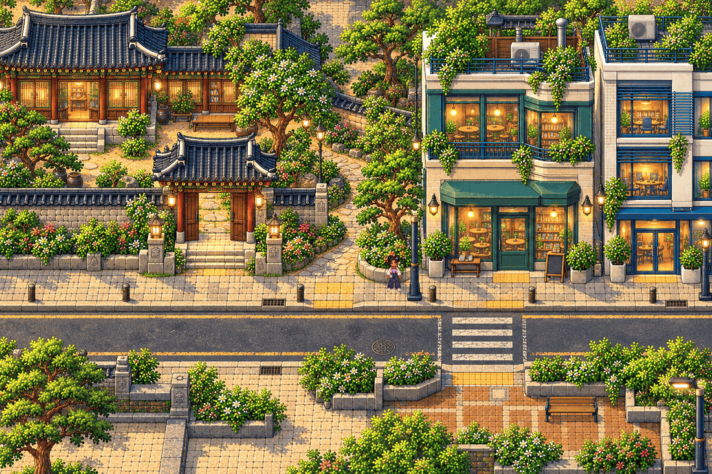
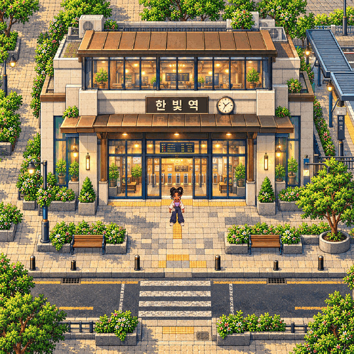
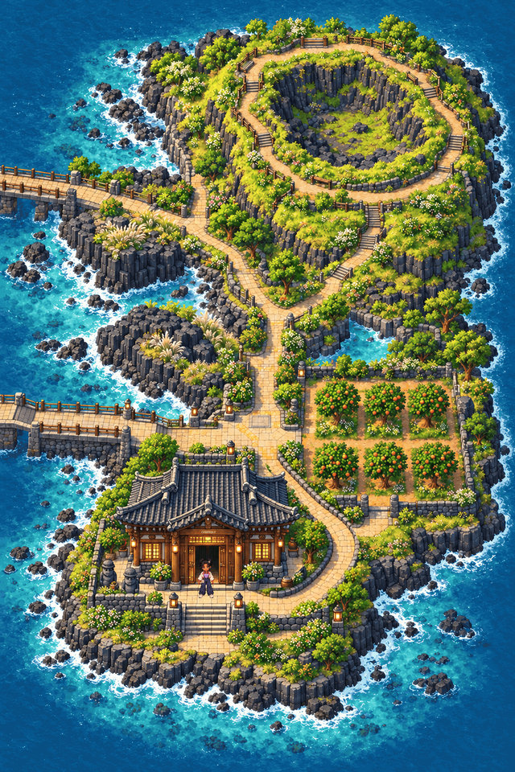
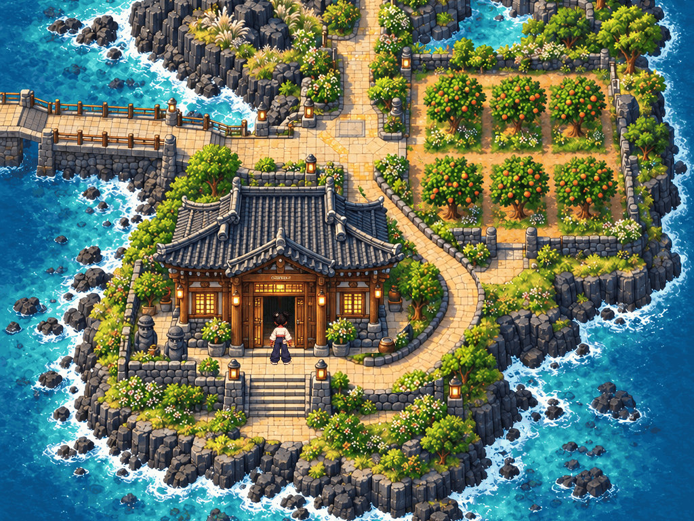
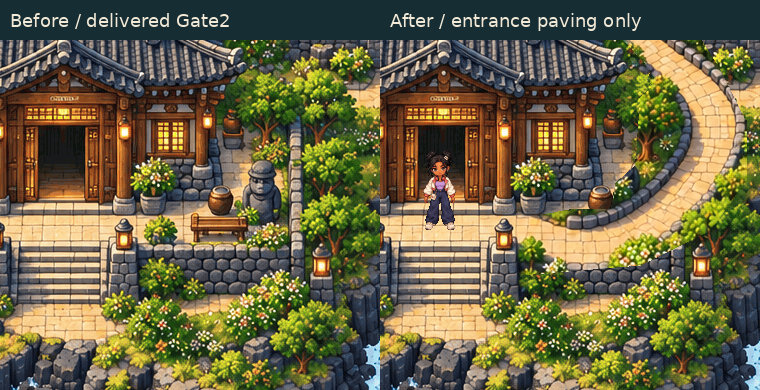
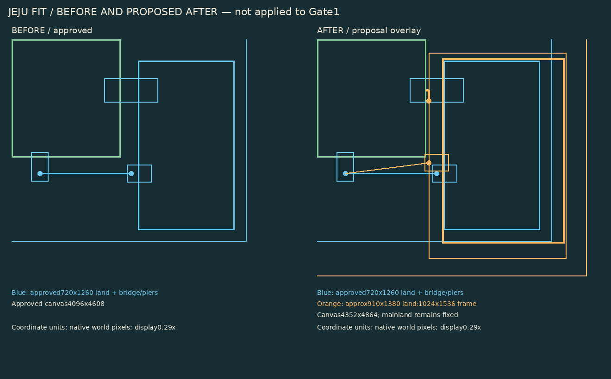
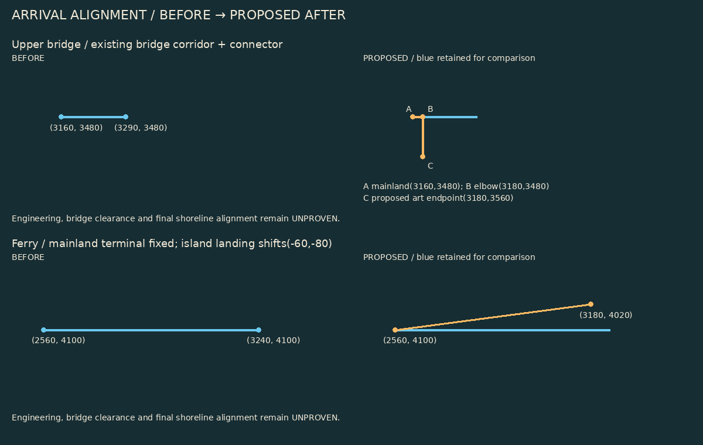
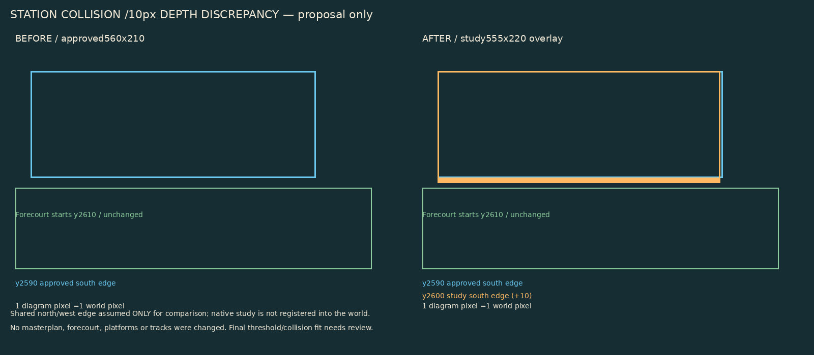

Gate2 final art review Human artistic approval pending. Gate3 remains locked.
JPEG previews below are under550KB each. Open the lossless native crops at100% for pixel evaluation. Original native PNGs remain unchanged.
Review index · Originality, feasibility and PASS/FAIL items · Updated full native Phaser evidence 
Craftsmanship comparison · 526KB 
Historical to modern · 540KB 
Station and Juni · 330KB 
Jeju terrain and Juni · 370KB 
Jeju entrance gameplay · 434KB 
Jeju entrance before / after · 158KB 
Jeju reservation proposal · 105KB 
Arrival alignment proposal · 77KB 
Station depth discrepancy · 90KB Lossless native1:1 crops A_PIXELS_1X · STATION_PIXELS_1X · JEJU_HOUSE_PIXELS_1X · B_PIXELS_1X · MUNEUM_PIXELS_1X · TRANSITION_PIXELS_1X · JEJU_TERRAIN_PIXELS_1X Unresolved: new modern commercial-building production, Jeju fit, arrival engineering, station10px discrepancy, modular assets, full-world seams and performance. No further production is authorized.